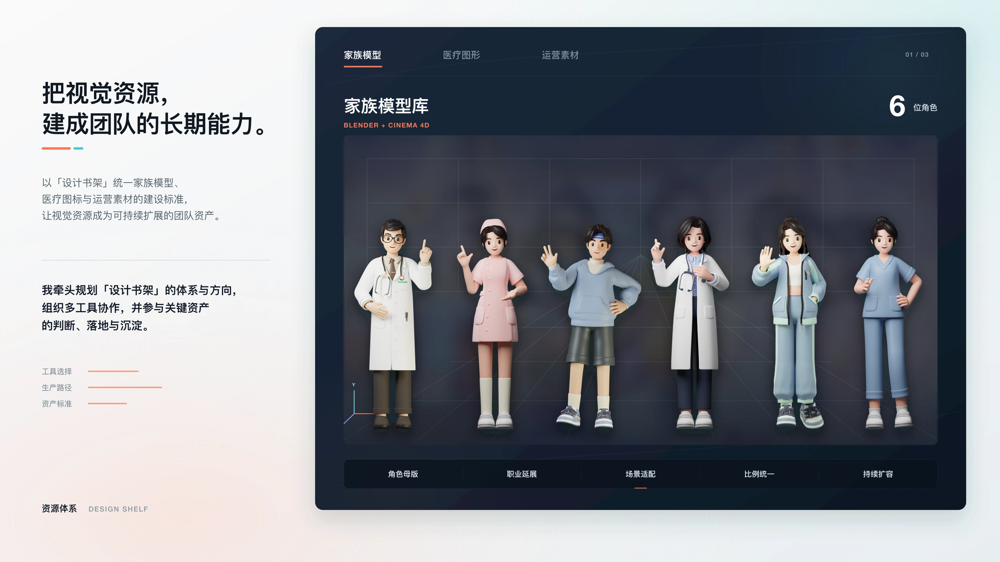
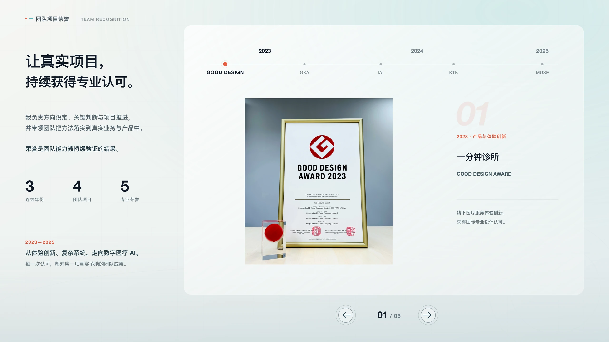

跳到项目内容
Wang Zheng
Design Portfolio
作品
01
BianQue 智能医生工作站
02
体检履约体验升级
03
设计管理与技术拓展
履历
设计管理与技术拓展

家族模型
医疗图形
运营素材
暂停自动轮播
4
800+
4
播放家庭情景剧 01
播放家庭情景剧 02
播放平安家医服务
播放门诊预约服务

GOOD DESIGN
GXA
IAI
KTK
MUSE
上一项
下一项
暂停自动轮播
BACK TO PORTFOLIO
返回作品目录
NEXT CASE · 01
BianQue 智能医生工作站
↑
真实案例
×